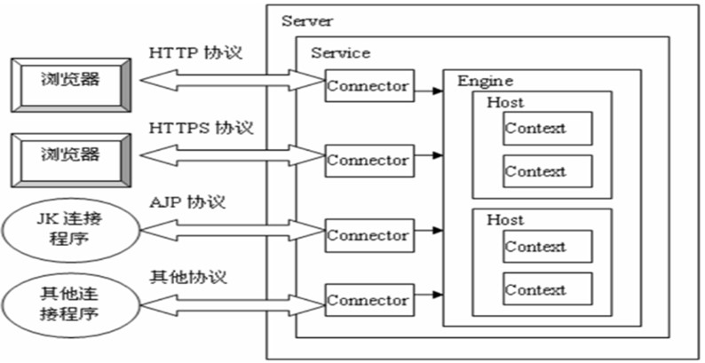

WebLogic : BEA 公司的产品 ; WebSphereAS : 是IBM公司的产品 ; JBossAS : 红帽公司的产品
Tomcat服务器 : Sun 公司在推出的小型 Servlet/JSP 调试工具的基础上发展起来的一个优秀的 Servlet 容器 , Tomcat 本身完全用 Java 语言编写 , 所以 Tomcat 的运行需要 Java 的支持 , 所以要先安装 JDK , 才能运行 ; 目前是 Apache 开源软件组织的一个软件项目 , 它的官网 http://tomcat.apache.org 得到了广大开源代码志愿者的大力支持 , 且可以和目前大部分的主流 Web 服务器 (IIS , Apache 服务器) 一起工作 , 它运行稳定 , 可靠且高效 , 已成为目前开发企业 JavaWeb 应用的最佳 Servlet 容器选择之一 , 目前最新版本 8.0
Tomcat 的目录层次结构
bin : 存放启动和关闭 Tomcat 的脚本文件
conf : 存放 Tomcat 服务器的各种配置文件
lib : 存放 Tomcat 服务器支撑的 jar 包
logs : 存放 Tomcat 的日志文件
temp : 存放 Tomcat 运行时产生的临时文件
webapps : web 应用虽在目录 , 即供外界访问的 web 资源的存放目录
work : Tomcat 的工作目录
JavaWeb 应用的组成结构
webapp --------------------------- Web 应用所在目录
| ---- html , jsp , css , js等文件 , 根目录下的文件外界可以直接访问
| ---- WEB-INF 目录
| --------- classes 目录 (Java 类)
| --------- lib目录(Java 类运行所需的 jar 包)
| --------- web.xml (web 应用的配置文件)
WEB-INF 这个目录下的文件外界无法直接访问 , 由 Web 服务器负责调用
Tomcat 的组成结构
Tomcat 本身由一系列可配置的组件构成 , 其中核心组件是 Servlet 容器组件 , 它是所有其他 Tomcat 组件的顶层容器 ; 每个组件都可以在 Tomcat 安装目录 /conf/server.xml 文件中进行配置 , 每个 Tomcat 组件在 server.xml 文件中对应一种配置元素 ; 下面用 XML 的形式展示各种 Tomcat 组件之间的关系
<Server> 代表整个 Servlet 容器组件 , 是最顶层元素 , 可以包含一个或多个 <Service> 元素
<Service> 包含一个 <Engine> 元素以及一个或多个 <Connector> 元素 , 这些 <Connector> 共享一个 <Engine>
<Connector/> 代表和客户程序实际交互的组件 , 负责接收客户请求 , 以及向客户返回响应
<Engine> 每个 <Service> 元素只能包含一个 <Engine> 元素 , 它处理在同一个 <Service> 中所有 <Connector> 接收到的客户请求
<Host> 在一个 <Engine> 中可以包含多个 <Host> ,它代表一个虚拟主机 (即一个服务器程序可以部署在多个有不同 IP 的服务器主机上) , 它可以包含一个或多个应用
<Context> 使用最频繁的元素 , 代表了运行在虚拟主机上的单个 Web 应用
</Host>
</Engine>
</Service>
</Server>
Tomcat 体系结构

虚拟目录的映射方式
从 Tomcat6 开始 , Tomcat 支持自动映射 , 即 Tomcat 服务器会自动管理 webapps 目录下的所有 Web 应用 , 并把它映射成虚拟目录 , 换句话说 , 只需把 Web 应用放在 webapps 目录下 , 不需要配置 Context , 外界可以直接访问 (如果放置在 webapps 目录下又配置了 Context , Tomcat 会实例化两次项目)
但是如果你不想讲项目放在 webapps 下 , 而是放在其他地方 , 还是需要配置 Context , 比如我的 Tomcat 在 C 盘 , 我的项目在 D 盘 , 则需要在 Host 下增加如下虚拟目录映射语句
<Contextpath="/myapp"docBase="D:/work/myapp">
Context 元素配置
Tomcat 在加载一个 Web 应用时 , 会一次按照以下五种方式查找 Web 应用中的
/conf/Context.xml 文件中查找 /conf/[enginename]/[hostname]/context.xml.default 文件中查找 /conf/[enginename]/[hostname]/[contextpath].xml 文件中查找 META-INF/context.xml 文件中查找 /conf/server.xml 文件中查找 Context 元素的属性
path : 指定访问该 Web 应用的 URL 入口
docBase : 指定 Web 应用的文件路径 , 可以写绝对路径 , 也可以写相对于 appBase 属性的相对路径
className : 指定实现 Context 组件的 Java 类的名字 , 这个类必须实现 org.apache.catalina.Contex 接口 , 该属性默认值为org.apache.catalina.core.StandardContext (不建议大家改动)
reloadable : 如果为 true , Tomcat 服务器在运行状态下回监视在 WEB-INF/classes 和 WEB-INF/lib 目录下的 class 文件的改动 , 以及监视 Web 应用的 WEB-INF/web.xml 文件的改动 , 如果检测到有更新 , 服务器会自动更新加载 Web 应用 ; 其默认值为false ; 在开发和调试阶段 , 将其改为true , 一般像 Eclipse 等开发环境都会默认改为 true ; 在正式发布阶段 , 应将其该为false , 可以降低 Tomcat 的运行负荷 , 提高 Tomcat 的运行性能
在一般情况下 ,
cachingAllowed : 是否允许启用静态资源 (HTML , 图片 , 声音等) 的缓存 ; 默认值为 true
cacheMaxSize : 设置静态资源缓存的最大值 , 单位为 K
workDir : 指定 Web 应用的工作目录
uppackWAR : 如果为 true , 会把 war 文件展开为开放目录后再运行 ; 为false , 直接运行 war 文件 ; 默认值为 true
web.xml 文件
该文件必须放在 /WEB-INF 目录下 , 但是从 7.0 版本开始 , Tomcat 可以不使用 web.xml 文件 , 而是使用注解方式
内存使用配置
Tomcat 是依赖于 JVM 的 , 所以 Tomcat 的使用内存配置实质上是 JVM 的内存配置
在 /bin 目录下的 catalina.bat 可以直接通过 Tomcat 设置 JVM 内存参数
Windows 下打开 catalina.bat 文件 , 在大概中间的位置 , 找到
set "Java_OPTS=%Java_OPT% -server -Xms2048m -Xmx2048m -XX:PermSize=256m -XX:MaxPermSize=512m -DJava.awt.headless=true"
通过内存设置充分利用服务器内存
-server : 模式启动应用慢 , 但是极大程度提高运行性能
-Xms2048m -Xmx2048m : 设置的是堆内存
Java8 开始 , PermSize 被 MetaspaceSize 代替 , MetaspaceSize 共享 heap , 不会再有 Java.lang.OutOfMemoryError : PermGen space , 可以不设置
Headless=true : 适用于Linux系统 , 与图形操作有关 , 如生成验证码含义是当前的是无显示器的服务器 , 应用中如果获取系统显示有关的参数会抛出异常 , Windows系统可不用设置
可通过 jmap -heap process_id 查看设置是否成功
最大连接数配置 (并发能力)
在 /conf/server.xml 里进行配置
在
将 protocol 属性改为 org.apache.coyote.http11.Http11NioProtocol , NIO 模型的效率更高
加入
maxThreads="500" // 当前可以同时处理的最大用户访问数
minSpareThreads="100" // 最小空闲线程连接数 , 用于优化线程池
maxSpareThreads="200"
acceptCount="200" // 当所有的线程以分配 , 仍然允许连接进来 , 但是出于等待状态的用户数 ; 等待线程数+工作线程数=总的可最大连接数 , 如果超过此数 , 新的连接将不会被接受 , 就会产生一个 http 错误
enableLookups="false" // 是否允许 DNS 反查 , 如果为 true , request.getRemoteHost 会执行 DNS 查找 , 反向解析 ip 对应域名或主机名 , 当没有这样需要的时候 , 可以将这个功能关闭 , 在一定程度上提高了 Tomcat 服务器的性能